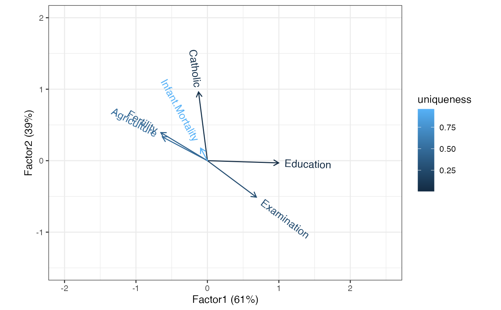

Functionality for factor analysis ('factanal') objects
Source:R/methods-stats-factanal.r
methods-factanal.RdThese methods extract data from, and attribute new data to,
objects of class "factanal" as returned by stats::factanal().
Usage
# S3 method for class 'factanal'
as_tbl_ord(x)
# S3 method for class 'factanal'
recover_rows(x)
# S3 method for class 'factanal'
recover_cols(x)
# S3 method for class 'factanal'
recover_inertia(x)
# S3 method for class 'factanal'
recover_coord(x)
# S3 method for class 'factanal'
recover_conference(x)
# S3 method for class 'factanal'
recover_supp_rows(x)
# S3 method for class 'factanal'
recover_aug_rows(x)
# S3 method for class 'factanal'
recover_aug_cols(x)
# S3 method for class 'factanal'
recover_aug_coord(x)Value
The recovery generics recover_*() return core model components, distribution of inertia,
supplementary elements, and intrinsic metadata; but they require methods for each model class to
tell them what these components are.
The generic as_tbl_ord() returns its input wrapped in the 'tbl_ord'
class. Its methods determine what model classes it is allowed to wrap. It
then provides 'tbl_ord' methods with access to the recoverers and hence to
the model components.
Details
Factor analysis of a data matrix relies on an an eigendecomposition of its
correlation matrix, whose eigenvectors (up to weighting) comprise the
variable loadings. For this reason, both row and column recoverers retrieve
the loadings and inertia is evenly distributed between them. When computed
and returned by stats::factanal(), the case scores are accessible as
supplementary elements. Redistribution of inertia commutes through both
score calculations.
See also
Other methods for eigen-decomposition-based techniques:
methods-cmds,
methods-eigen,
methods-princomp
Other models from the stats package:
methods-cancor,
methods-cmds,
methods-kmeans,
methods-lm,
methods-prcomp,
methods-princomp
Examples
# data frame of Swiss fertility and socioeconomic indicators
class(swiss)
#> [1] "data.frame"
head(swiss)
#> Fertility Agriculture Examination Education Catholic
#> Courtelary 80.2 17.0 15 12 9.96
#> Delemont 83.1 45.1 6 9 84.84
#> Franches-Mnt 92.5 39.7 5 5 93.40
#> Moutier 85.8 36.5 12 7 33.77
#> Neuveville 76.9 43.5 17 15 5.16
#> Porrentruy 76.1 35.3 9 7 90.57
#> Infant.Mortality
#> Courtelary 22.2
#> Delemont 22.2
#> Franches-Mnt 20.2
#> Moutier 20.3
#> Neuveville 20.6
#> Porrentruy 26.6
# perform factor analysis
swiss_fa <- factanal(~ ., factors = 2L, data = swiss, scores = "regression")
# wrap as a 'tbl_ord' object
(swiss_fa <- as_tbl_ord(swiss_fa))
#> # A tbl_ord of class 'factanal': (47 x 2) x (6 x 2)'
#> # 2 coordinates: Factor1 and Factor2
#> #
#> # Rows (principal): [ 47 x 2 | 0 ]
#> Factor1 Factor2 |
#> |
#> 1 0.0791 -0.634 |
#> 2 -0.179 1.08 |
#> 3 -0.588 1.20 |
#> 4 -0.424 -0.158 |
#> 5 0.382 -0.668 |
#> # ℹ 42 more rows |
#>
#> #
#> # Columns (principal): [ 6 x 2 | 0 ]
#> Factor1 Factor2 |
#> |
#> 1 -0.652 0.393 |
#> 2 -0.631 0.333 |
#> 3 0.685 -0.510 |
#> 4 0.997 -0.0313 |
#> 5 -0.124 0.961 |
#> 6 -0.0947 0.175 |
# recover loadings
get_rows(swiss_fa, elements = "active")
#> Factor1 Factor2
get_cols(swiss_fa)
#> Factor1 Factor2
#> Fertility -0.65238512 0.39335226
#> Agriculture -0.63054439 0.33275063
#> Examination 0.68498141 -0.51036433
#> Education 0.99700850 -0.03128268
#> Catholic -0.12417831 0.96118093
#> Infant.Mortality -0.09466294 0.17483734
# recover scores
head(get_rows(swiss_fa, elements = "score"))
#> Factor1 Factor2
#> Courtelary 0.07912746 -0.6344915
#> Delemont -0.17926953 1.0783941
#> Franches-Mnt -0.58784929 1.2004233
#> Moutier -0.42433417 -0.1583409
#> Neuveville 0.38211185 -0.6682790
#> Porrentruy -0.37286722 1.0884740
# augment column loadings with uniquenesses
(swiss_fa <- augment_ord(swiss_fa))
#> # A tbl_ord of class 'factanal': (47 x 2) x (6 x 2)'
#> # 2 coordinates: Factor1 and Factor2
#> #
#> # Rows (principal): [ 47 x 2 | 2 ]
#> Factor1 Factor2 | .element name
#> | <chr> <chr>
#> 1 0.0791 -0.634 | 1 score Courtelary
#> 2 -0.179 1.08 | 2 score Delemont
#> 3 -0.588 1.20 | 3 score Franches-Mnt
#> 4 -0.424 -0.158 | 4 score Moutier
#> 5 0.382 -0.668 | 5 score Neuveville
#> # ℹ 42 more rows | # ℹ 42 more rows
#>
#> #
#> # Columns (principal): [ 6 x 2 | 3 ]
#> Factor1 Factor2 | name uniqueness .element
#> | <chr> <dbl> <chr>
#> 1 -0.652 0.393 | 1 Fertility 0.420 active
#> 2 -0.631 0.333 | 2 Agriculture 0.492 active
#> 3 0.685 -0.510 | 3 Examination 0.270 active
#> 4 0.997 -0.0313 | 4 Education 0.005 active
#> 5 -0.124 0.961 | 5 Catholic 0.0607 active
#> 6 -0.0947 0.175 | 6 Infant.Mortal… 0.960 active
# symmetric biplot
swiss_fa %>%
ggbiplot() +
theme_bw() +
geom_cols_vector(aes(color = uniqueness, label = name)) +
expand_limits(x = c(-2, 2.5), y = c(-1.5, 2))
